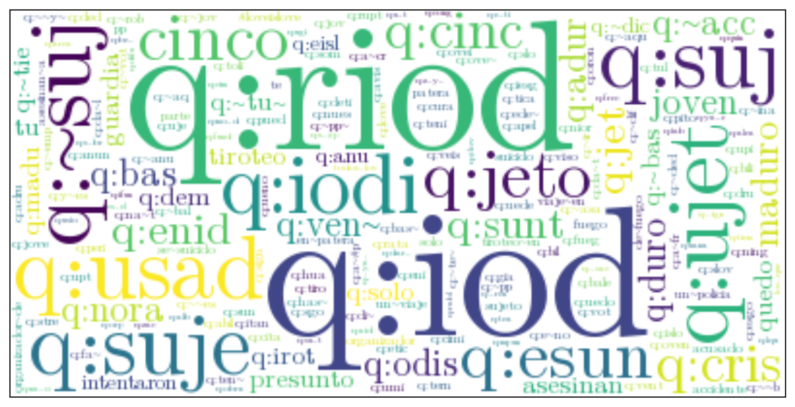

Text Classification
Who / Where
INGEOTEC

GitHub: https://github.com/INGEOTEC
WebPage: https://ingeotec.github.io/
Aguascalientes, México

Opinion Mining
Opinion Mining
Definition
Study people’s opinions, appraisals, attitudes, and emotions toward entities, individuals, events, and their attributes.
- Distilling opinions from texts
- A brand is interested in the costumer’s opinions
- Huge amount of information
Opinion Mining (2)
Formal Definition
- \(e_i\) - Entity
- \(a_{ij}\) - Aspect of \(e_i\)
- \(o_{ijkl}\) - Opinion orientation
- \(h_k\) - Opinion source - Opinion holder
- \(t_l\) - Time of the opinion
Entity
Product, service, person, event, organization, or topic
Aspect
Entity’s component or attribute
Opinion Mining Tasks
Tasks
- Entity extraction
- Aspect extraction - considered the entities
- Identify opinion source and time
- Identify opinion orientation
Introduction
Text Classification
Definition
The aim is the classification of documents into a fixed number of predefined categories.
Polarity
El día de mañana no podré ir con ustedes a la librería
Negative
Text Classification Tasks
Polarity
Positive, Negative, Neutral
Emotion (Multiclass)
- Anger, Joy, …
- Intensity of an emotion
Event (Binary)
- Violent
- Crime
Profiling
Gender
Man, Woman, Nonbinary, …
Age
Child, Teen, Adult
Language Variety
- Spanish: Spain, Cuba, Argentine, México, …
- English: United States, England, …
Approach
Machine Learning
Definition
Machine learning (ML) is a subfield of artificial intelligence that focuses on the development and implementation of algorithms capable of learning from data without being explicitly programmed.
Types of ML algorithms
- Unsupervised Learning
- Supervised Learning
- Reinforcement Learning
Supervised Learning (Multiclass)
Supervised Learning (Binary)
Supervised Learning (Classification)
Decision function
\(g(\mathbf x) = -0.78 x_1 + 0.60 x_2 + -0.88\)
Supervised Learning (Geometry)
Decision function
\(g(\mathbf x) = -0.78 x_1 + 0.60 x_2 + -0.88\)
Supervised Learning (Geometry 2)
\(w_0\)
- \(w_0 = -0.88\)
- \(w_0 = 0.88\)
Supervised Learning (Geometry 3)
Decision function
- \(g_{svm}(\mathbf x) = -0.78 x_1 + 0.60 x_2 + -0.88\)
- \(g_{lr}(\mathbf x) = -2.58 x_1 + 0.84 x_2 + -3.06\)
Starting point
Training set
| text | klass | |
|---|---|---|
| 0 | El Depor en los paripes: le ganan al Fuenlabra... | 0 |
| 1 | Corte Suprema confirma condena de 15 años a Ca... | 1 |
| 2 | @gusbermudezok Aquí está Tigrotta cuando todav... | 0 |
| 3 | POLICÍAS ESTATALES ASEGURAN GMC SIERRA ROBADA ... | 1 |
| 4 | Ayuda a @PETA_Latino a proteger a los monos, p... | 0 |
| 5 | Un residente local encaró y persiguió al ataca... | 1 |
| 6 | @elmostrador Murieron inocentes como en todo c... | 0 |
| 7 | 🚨🚔🚑#Sucesos #SJR Vecinos detienen a sujeto por... | 1 |
Quiz
Question
Which of the following tasks does the previous training set belong to?
- Polarity
- Emotion identification
- Aggressive detection
- Profiling
Training set (2)
Problem
The independent variables are texts
Solution
- Represent the texts in an suitable format for the classifier
- Token as a vector
- Sparse vector
- Dense vector
- Utterance as a vector
Text Representation
Token as Vector
Token as vector
- The idea is that each token \(t\) is associate to a vector \(\mathbf v_t \in \mathbb R^d\)
- Let \(\mathcal V\) represent the set composed by the different tokens
- \(d\) corresponds to the dimension of the vector
\(d << \lvert \mathcal V \rvert\) (Dense Vector)
- GloVe
- Word2vec
- fastText
Token as Vector (2)
\(d = \lvert \mathcal V \rvert\) (Sparse Vector)
- \(\forall_{i \neq j} \mathbf v_i \cdot \mathbf v_j = 0\)
- \(\mathbf v_i \in \mathbb R^d\)
- \(\mathbf v_j \in \mathbb R^d\)
Algorithm
- Sort the vocabulary \(\mathcal V\)
- Associate \(i\)-th token to
- \((\ldots, 0, \overbrace{\beta_i}^i, 0, \ldots)^\intercal\)
- where \(\beta_i > 0\)
Utterance as Vector
Procedure
\[\mathbf x = \sum_{t \in \mathcal U} \mathbf{v}_t\]
- where \(\mathcal{U}\) corresponds to all the tokens of the utterance
- The vector \(\mathbf{v}_t\) is associated to token \(t\)
Unit Vector
\[\mathbf x = \frac{\sum_{t \in \mathcal U} \mathbf v_t}{\lVert \sum_{t \in \mathcal U} \mathbf v_t \rVert} \]
Sparse Representation
Tokens
flowchart LR
Entrada([Text]) --> Norm[Text Normalizer]
Norm --> Seg[Tokenizer]
Seg --> Terminos(...)
Text Normalization
Tokenizer
Common Types
- Words
- n-grams (Words)
- q-grams (Characters)
- skip-grams
Tokenizer (2)
\(\mu\)-TC
\(\mu\)-TC (2)
Training set
Utterance as Vector
Utterance as Vector (2)
Term Frequency - IDF
text = training_set[3]['text']
tokens = tm.tokenize(text)
vector = []
for token, tf in zip(*np.unique(tokens, return_counts=True)):
if token not in token2id:
continue
vector.append((token2id[token], tf * token2beta[token]))
vector[:4][(57, np.float64(7.906890595608518)),
(51, np.float64(5.8479969065549495)),
(0, np.float64(1.3269461696539864)),
(9, np.float64(2.5277907564370796))]Utterance as Vector (3)
Quiz
Question
Which of the following representations do you consider to produce a larger vocabulary?
Text Classification
Procedure
Performance
Prediction
tm = TextModel(token_list=[-2, -1, 3, 4], num_option=OPTION_NONE,
usr_option=OPTION_DELETE, url_option=OPTION_DELETE,
emo_option=OPTION_NONE, lc=True, del_dup=False,
del_punc=True, del_diac=True
).fit(training_set)
X = tm.transform(training_set)
labels = np.array([x['klass'] for x in training_set])
m = LinearSVC(dual='auto', class_weight='balanced').fit(X, labels)
hy = m.predict(tm.transform(test_set))Feature Importance
Feature Importance (2)
Wordcloud
path = './emoji_text.ttf'
items = tm.token_weight.items
tokens = {tm.id2token[id]: w_norm[id] * _w for id, _w in items()
if w_norm[id] >= 2.0 and np.isfinite(w_norm[id])}
word_cloud = WordCloud(font_path=path,
background_color='white'
).generate_from_frequencies(tokens)
plt.imshow(word_cloud, interpolation='bilinear')
plt.tick_params(left=False, right=False, labelleft=False,
labelbottom=False, bottom=False)Feature Importance (2)

Conclusions
- Describe a supervised learning approach to tackle text classifications.
- Explain the geometry of linear classifiers.
- Use a procedure to represent a text as a vector.
- Measure the performance of a text classifier.